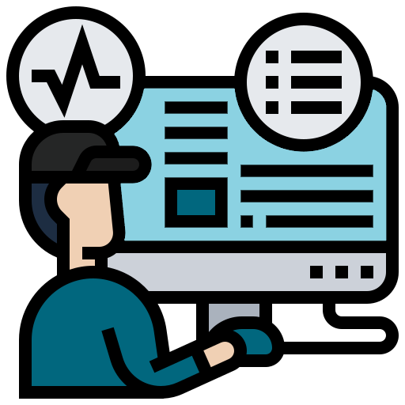

Como nosso produto funciona?
Health Inspec te ajuda a ter um atendimento melhor

Implantação
Implementamos nossa aplicação nos computadores da recepção e nos totens de
atendimento
Monitoramento
As máquinas monitoradas apresentarão os picos de processos que causam
lentidão no sistema
Agilidade
Com nossos serviços, as máquinas terão melhor desempenho e o atendimento
será mais rápido
Sobre nós
Fundada em 2022, Health Inspec
é uma empresa voltada
para o monitoramento de máquinas
de estabelecimentos de saúde.
Com nossos serviços, hospitais
e postos conseguem impedir problemas
nos computadores e totens responsáveis
pelos atendimentos, evitando, assim,
lentidão e instabilidade.